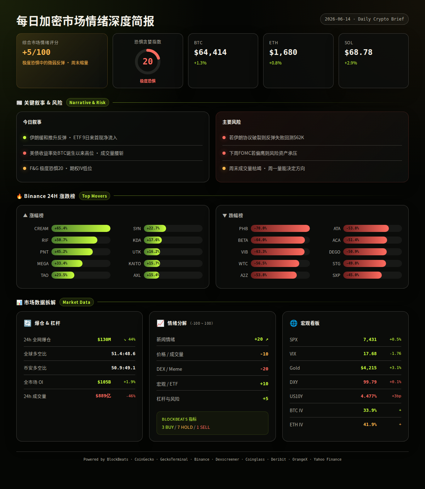
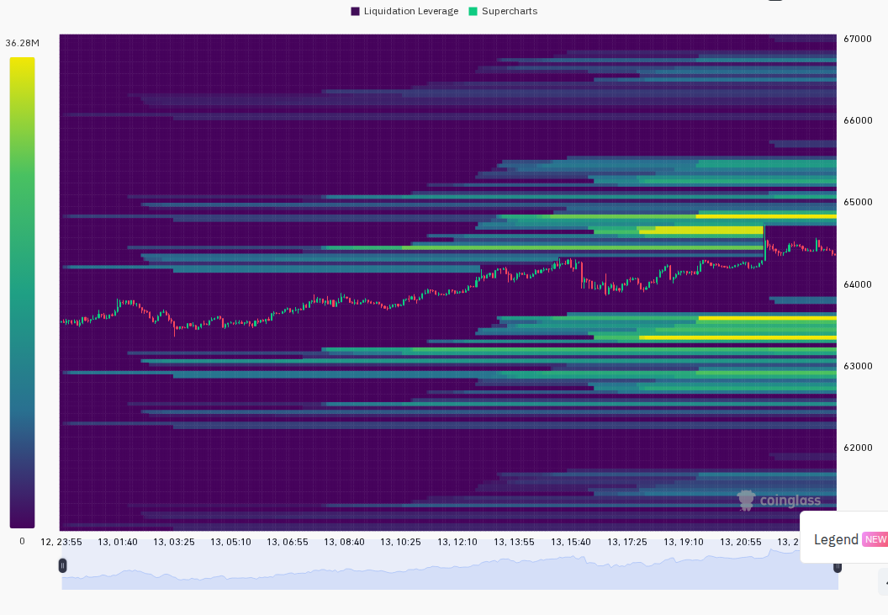
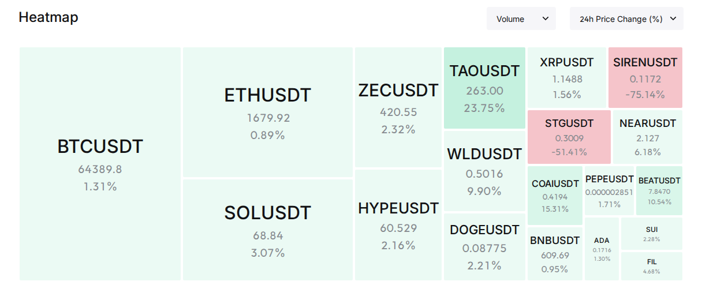

=== 第一段：叙事与风险面 ===
市场在极度恐惧中迎来微弱反弹。伊朗与美国谈判出现缓和迹象，推动 BTC 从 $63,400 回升至 $64,400，BTC ETF 在连续 9 日净流出后首次转正（+$85.9M）。但周末成交量腰斩、美国长债收益率仍处 BTC 诞生以来最高区间，反弹根基尚未稳固。
24h变化: 情绪 +5(较昨日) | BTC ↗1.3% | ETH ↗0.8% | SOL ↗2.9% | VIX 17.7(正常↘1.8) | 成交量 ↘46% | 爆仓 ↘44% (multi-source)
BTC / ETH / SOL
信息 1: BTC 从 $63,400 区域反弹突破 $64,000，CoinGecko 显示 24h +1.3%，Binance 24h 高位 $64,762，成交量 $6.38 亿。反弹主要由伊朗局势缓和推动，但价量背离明显——周末成交量较前日腰斩 46%。 (BlockBeats, Binance, CoinGecko)
信息 2: ETH 表现弱于 BTC，24h 仅 +0.8% 至 $1,680，ETH/BTC 比率继续走低。本周美国 ETH 现货 ETF 累计净流出 $14.8M。主流 CEX 和 DEX 资金费率显示 BTC 空头动能正在减弱，但 ETH 仍偏空。 (BlockBeats, Binance, CoinGecko)
信息 3: SOL 表现优于 BTC 和 ETH，24h +2.9% 至 $68.78。Hyperliquid 永续合约 OI 市占率达 8.2% 创历史新高，链上活跃度维持。 (BlockBeats, Binance, CoinGecko)
ETF / 宏观 / 监管
信息 4: 美国 BTC 现货 ETF 6 月 12 日净流入 $85.9M，为连续 9 个交易日净流出后首次转正。但本周累计仍为净流出 $319.3M，其中 IBIT 流出 $355M。总净流入累计 $1,026.35 亿。ETF 资金流是否持续回正将是下周关键观察。 (BlockBeats)
信息 5: CME FedWatch 显示 6 月美联储维持利率不变概率 97.4%，加息概率降至 59.4%（此前更高）。下周美联储与日本央行将相继公布利率决议，鲍威尔将发表讲话——这是下周最重要的宏观事件。 (BlockBeats)
信息 6: 加密货币分析师 Darkfost 指出：当前美国 30 年期和 10 年期国债收益率在 4.5%-5% 区间波动，处于 BTC 诞生以来最高水平。高风险溢价被压缩，投资者更倾向配置低风险固定收益资产，BTC 吸引力下降。但如果未来宏观预期明朗化、资金回流债市压低收益率，BTC 风险溢价将重新扩大。 (BlockBeats)
信息 7: 波兰总统第三次否决加密货币监管法案。萨尔瓦多优化移民制度，临时居民享受 BTC 收益和海外收入 0% 税率。 (BlockBeats)
伊朗谈判与地缘政治
信息 8: 伊朗外交部表示释放伊朗冻结资金是协议关键部分，同时澄清伊朗谈判团队未来几天无计划访问巴基斯坦或日内瓦，伊美备忘录不会在明日签署。巴基斯坦总理则表示预计美伊协议将在 24 小时内最终敲定。地缘缓和是今日 BTC 反弹的核心叙事驱动力。 (BlockBeats)
信息 9: 分析认为美伊紧张局势降级推动 BTC 反弹，但市场反转仍需等待 ETF 流入和买盘兴趣确认。渣打银行表示 BTC 可能已在 $59,000 附近触底，加密寒冬已结束。 (BlockBeats)
AI / 山寨币 / Meme
信息 10: Bittensor (TAO) 24h 大涨 +23.5% 至 $262.70，Binance 成交量 $8,650 万。CoinGecko 显示 Bittensor Subnets 板块 24h 上涨 +23.8%，AI 叙事在极度恐惧中率先反弹。Venice Ecosystem (VVV) 板块也上涨 +16.2%。 (Binance, CoinGecko, BlockBeats)
信息 11: SIREN 遭遇鲸鱼抛售——先卖出 1,700 万枚导致价格腰斩 50%，随后再卖出 1.18 亿枚导致价格暴跌逾 70%。典型的低流动性代币鲸鱼离场风险。 (BlockBeats)
信息 12: Pudgy Penguins 宣布关闭 Pudgy Party 手机游戏，PENGU 代币面临叙事削弱风险。 (BlockBeats)
板块轮动
CoinGecko 板块 24h 涨幅前三（过滤异常值）：Kumbaya Launchpad +28.0%、Bittensor Subnets +23.8%、JPY 稳定币 +17.6%。跌幅前三：LP Tokens -51.3%、BagsApp Ecosystem -38.0%、DeFAI -37.5%。AI 相关板块（Bittensor、Venice）资金流入明显，DeFAI 继续遭抛售。 (CoinGecko)
Binance 涨跌榜
24h 涨幅前十（USDT 对）：CREAM +65.4%、RIF +50.7%、PNT +45.2%、MEGA +33.4%、TAO +23.5%、SYN +22.7%、KDA +17.6%、UTK +16.2%、KAITO +15.7%、AXL +15.4%。跌幅前十：PHB -70.0%、BETA -64.0%、VIB -63.3%、WTC -56.5%、A2Z -53.8%、ATA -53.8%、ACA -51.4%、DEGO -50.9%、STG -49.8%、SXP -45.0%。跌幅榜多为低流动性小币，存在退市或项目停滞风险。 (Binance)
预测市场 / 融资
信息 13: AI 编程代理初创公司 Niteshift 完成 $700 万种子轮融资。ARK Invest 昨日买入超 $4.4 亿 SpaceX 股票。SpaceX 正式成为全球第八大公开 BTC 持仓公司，持有 18,712 BTC。 (BlockBeats)
风险 1: 伊朗谈判反复 —— 多个相互矛盾的声明（"协议关键部分达成" vs "备忘录明日不签" vs "24小时内敲定"），信息高度不确定。→ 观察: 若周末出现实质性协议签署消息，BTC 有望测试 $66,000（该位置 CEX 累计空头爆仓压力达 $9.15 亿）；失效条件: 若谈判破裂或周末无进展，$63,000 支撑将再次面临考验。 (BlockBeats, analysis)
风险 2: 下周 FOMC 利率决议（6 月 17-18 日）—— 虽然 97.4% 概率维持不变，但点阵图和经济预测若偏鹰，将直接推高美债收益率和美元。→ 观察: 若鲍威尔释放鸽派信号（暗示 7 月降息可能），风险资产将获提振；失效条件: 若点阵图显示年内加息预期，BTC 恐回测 $59,000 渣打"底部"。 (BlockBeats, CME FedWatch, analysis)
风险 3: 美债收益率压制 —— US10Y 最新 4.477%，24h +3bp，仍处历史高位区间。→ 观察: 若 10Y 突破 4.55%，BTC 与风险资产将承压；失效条件: 若 10Y 回落至 4.40% 以下，将释放 BTC 上行空间。 (BlockBeats, analysis)
风险 4: ETF 资金流能否持续 —— Jun 12 净流入 +$85.9M 是积极信号，但本周累计仍为净流出 $319.3M。单日回正不足以确认趋势。→ 观察: 若下周初 ETF 连续 2 日以上净流入且单日超 $200M，机构买盘回归信号确认；失效条件: 若下周继续净流出，极度恐惧情绪可能加深至 F&G <15。 (BlockBeats, analysis)
风险 5: 成交量塌缩 —— 全网 24h 成交量 $889 亿（Coinglass）较前日 -46%，周末效应明显但降幅过大。→ 观察: 若周一成交量恢复至 $1,200 亿以上且伴随价格上涨，反弹有资金面支撑；失效条件: 若周一量能继续萎缩，当前反弹为无量虚涨。 (Coinglass, analysis)
非财务建议声明: 本报告仅提供市场数据和情绪分析，不构成任何买卖建议。
6 月 14-15 日 — 伊朗谈判周末窗口 — 若达成协议则利好风险资产（Bullish），若破裂则利空（Bearish）。(BlockBeats)
6 月 17-18 日 — 美联储 FOMC 利率决议 + 鲍威尔新闻发布会 — 市场定价 97.4% 不变，看点在于点阵图和降息路径指引（Neutral/Bullish 若偏鸽）。(BlockBeats, CME)
6 月 19 日 — 日本央行利率决议 — 若意外加息将推升日元、压制美元，间接利好 BTC（Neutral/Bullish）。(BlockBeats)
6 月 20 日 — 季度期权/期货到期日（Triple Witching）— 传统金融市场波动可能外溢至加密（Neutral/High Vol）。(analysis)
6 月 17-21 日 — 关注 BTC ETF 周度资金流数据 — 本周净流出后下周能否逆转是关键（Bullish/Bearish 取决于方向）。(BlockBeats)


=== 第二段：数据与技术面 ===
整体评分: +5/100 (↗+5 较昨日)
5 大情绪维度:
新闻情绪: +20/100 ↗+10 — 伊朗缓和 + ETF 转正为两大积极信号，渣打"底部已至"判断增强信心。但美债收益率高企、成交量腰斩、SIREN 鲸鱼抛售等负面事件对冲。 (BlockBeats)
价格/成交量: -10/100 ↗+5 — BTC/ETH/SOL 均小幅上涨，但成交量暴跌 46%（周末效应），价量背离明显。BTC 在 24h 高位附近横盘（range 74% 位置），短期方向不明。 (Binance, CoinGecko, Coinglass)
DEX/meme 活跃度: -20/100 ↘-5 — MEGA 在 Kumbaya DEX 表现强劲（+34%，买卖比 1741:630），但 SIREN 鲸鱼 -70% 砸盘、PENGU 关闭游戏对 meme 情绪形成压制。Solana 链上无显著新池达到阈值。 (GeckoTerminal, Dexscreener, BlockBeats)
宏观/ETF/流动性: +10/100 ↗+15 — ETF 9 日来首次净流入（+$85.9M）、VIX 回落至 17.68（正常区间）、DXY 7 日下跌 -0.28%、黄金大涨 +3.05%。但 US10Y 24h +3bp 至 4.477% 仍为隐忧。BTC 与黄金同涨显示避险属性共振。 (BlockBeats, Yahoo Finance)
杠杆与风险: +5/100 ↗+5 — 全网爆仓 $1.3 亿 ↘44%，多空比 51.4:48.6 接近平衡，资金费率正常（BTC 期货轻微贴水 -0.05%），杠杆风险可控。OI 微增 +1.9% 显示未出现大规模加仓。 (Coinglass, Binance, BlockBeats)
BlockBeats bottom_top_indicator 完整指标:
· 市场脉搏指数: 未显示
· 整体市场流动性指数: Hold
· 比特币流动性指数: Hold
· 以太坊流动性指数: Buy
· 过去24小时累积比特币流动性指数: Hold
· 整体市场流动性（以比特币为单位）: Hold
· 合约多空比偏离指数: Caution
· 山寨币抗跌指数: Sell
· Bitfinex BTC/USD 溢价: Hold
· USDC/USDT 溢价: Hold
· Binance USDT 借贷利率: Buy
· 持仓量加权资金费率年化利率: Buy
综合: 3 Buy / 1 Sell / 1 Caution / 7 Hold — 市场整体偏中性，但 ETH 流动性 + 借贷利率 + 资金费率三项 Buy 信号暗示机构层面看多倾向高于散户情绪面（F&G 20）。山寨币抗跌指数 Sell 与 ETH Buy 存在矛盾——资金可能从山寨币向 ETH/BTC 集中。 (BlockBeats)
BTC: $64,414，24h +1.3%，成交量 $6.38 亿。24h 区间 $63,419-$64,763，当前位于区间 74% 高位。近 6 小时横盘整理，1h 蜡烛实体缩小。期货轻微贴水 -0.05%（Mark $64,383 vs Index $64,417），牛熊胶着。 (Binance, CoinGecko)
ETH: $1,680，24h +0.8%，成交量 $1.79 亿。24h 区间 $1,662-$1,697，当前位于区间 50% 中位。近 6 小时走势平淡，ETH/BTC 继续走弱。期货轻微贴水 -0.06%，无方向性。 (Binance, CoinGecko)
SOL: $68.78，24h +2.9%，成交量 $1.04 亿。24h 区间 $66.59-$69.59，当前位于区间 73% 高位。近 6 小时呈微涨趋势，是三币中最强的。期货贴水 -0.07%，略偏空。 (Binance, CoinGecko)
全局: 总市值 $2.28 万亿，24h 成交量 $493 亿。BTC 市占率 56.5%（+0.2pp），ETH 市占率 8.9%。BTC.D 维持在 56%+ 说明山寨币季节仍未到来。 (CoinGecko)
衍生品杠杆（CoinGecko 全交易所）: BTC 总 OI 数据暂缺（API 返回异常），Coinglass 显示全网 OI $1,052 亿（+1.9%）。BTC 永续合约 Binance 资金费率最新数据正常（未触发 >0.05% 警戒线）。ETH 同样正常区间。 (Coinglass)
爆仓数据: 全网 24h 爆仓 $1.30 亿，较前日 -44.4%。其中多头爆仓 $7,135 万（54.9%），空头爆仓 $4,836 万（45.1%）。多头爆仓略多于空头，表明反弹前的最后一波下杀以上损多头为主，但并非极端。爆仓总额降至 $1.3 亿级别（低于日常均值 $2-3 亿），市场去杠杆较充分。 (Coinglass, BlockBeats)
多空比: 全局多空比 51.36:48.64（轻微偏多），Binance 大户多空比 50.88:49.12（接近完全平衡）。两者差值仅 0.48pp，无重大分歧。BTC 永续资金费率加权年化为 Buy 信号（BlockBeats），暗示持仓成本由空头支付，偏多。 (Coinglass, BlockBeats)
跨平台 OI（6 月 12 日 vs 6 月 11 日）: Binance $176.7 亿（↘1.1%）、Bybit $88.0 亿（↘3.6%）、Hyperliquid $60.1 亿（↗2.1%）。Hyperliquid 逆势增长，市占率创新高 8.2%。Binance 和 Bybit 成交量分别下降 21% 和 15%，周末交易清淡。 (BlockBeats)
宏观看板:
· SPX: 7,431，24h +0.5%，5d +0.4% — 美股温和上行，未对加密形成拖累。 (Yahoo Finance)
· VIX: 17.68，↘1.76，Normal 区间 — 恐慌回落，利好风险资产。 (Yahoo Finance)
· DXY: 99.79，24h +0.10%，7d -0.28% — 美元 7 日走弱，利好 BTC。 (BlockBeats)
· US10Y: 4.477%，24h +3bp，7d -7bp — 短期上行但周线仍下行，长期趋势偏正面但日内偏负面。 (BlockBeats)
· Gold: $4,215，24h +3.05%，5d -2.79% — 黄金单日大涨，BTC 同涨，两者目前呈正相关（避险共振而非风险偏好）。 (Yahoo Finance)
· BTC 与 SPX 相关性: 正相关减弱，BTC 更多受地缘叙事驱动而非美股。 (analysis)
· BTC 与 Gold 相关性: 正相关加强，BTC 与黄金同涨表明市场在定价地缘不确定性缓和的乐观情绪。 (analysis)
期权波动率 (Deribit):
· BTC ATM IV: 33.9%（近月 6 月 17 日到期，执行价 $66,500）— 处于 <40% 低波动区间，期权市场未定价大幅波动。 (Deribit)
· ETH ATM IV: 41.9%（6 月 15 日到期，执行价 $1,675）— 处于 40-60% 正常区间。 (Deribit)
· ETH-BTC IV 息差: 8.0pp — 低于 15pp 阈值，表明市场未给予山寨币投机溢价，情绪保守。 (Deribit, analysis)
· VIX vs BTC IV: VIX 17.68，BTC IV 33.9% — BTC 隐含波动率约为 VIX 的 2 倍，处于历史中低水平，暗示期权市场认为短期 BTC 波动有限。 (Deribit, Yahoo Finance)
精选关注标的（CG Trending + Binance 涨跌 + BB 新闻交叉验证）:
TAO (Bittensor): $262.70，24h +23.5%，市值约 $40 亿级别。DEX 数据: Bittensor 主网不在 Dexscreener 覆盖范围，Binance 成交量 $8,650 万为流动性基准。催化剂: AI 叙事在极度恐惧中率先反弹，Bittensor Subnets 板块 +23.8% 领涨全市场，AI 仍为最强主题。风险: 短期涨幅过大，若大盘回调 TAO 可能领跌。 (CoinGecko, Binance, BlockBeats)
MEGA (MegaETH): $0.063，24h +33.4%，市值约 $2.2 亿。DEX: megaeth/kumbaya 链上流动性 $133 万，24h 成交量 $71 万，买卖比 1741:630（强买盘主导）。催化剂: MegaETH 生态 Kumbaya Launchpad 板块 +28% 领涨，新链叙事 + Launchpad 双驱动。风险: DEX 流动性仅 $133 万，大额抛售可能引发剧烈波动；新链生态验证尚早。 (CoinGecko, Dexscreener, BlockBeats)
CREAM (Cream Finance): $2.10，24h +65.4%，市值约 $1,800 万。DEX: Ethereum Uniswap 流动性仅 $1.9 万，成交量 $2,717。催化剂: 不明（无对应 BlockBeats 新闻）。风险: DEX 流动性极低，65% 涨幅可能由极少量资金推动，勿追高。 (Binance, Dexscreener)
RIF (RSK Infrastructure Framework): $0.1215，24h +50.7%，成交量 $1,841 万。催化剂: BlockBeats 报道 RIF 单日拉升 33% 后继续加速，可能与 RSK 生态发展有关。风险: 低市值代币涨幅过大后易回调，RSK 链上数据不支持持续暴涨。 (Binance, BlockBeats)
KAITO: $0.48，24h +15.7%，成交量 $191 万。催化剂: AI 叙事扩散 + 低市值反弹。风险: 成交量偏低，跟随 AI 板块热度但自身基本面不明。 (Binance, CoinGecko)
SIREN: 逆势暴跌 -70%+，24h 内从高位被鲸鱼两次砸盘（1,700 万 + 1.18 亿枚）。当前为典型"鲸鱼离场"警示案例，无论多低都不要试图抄底，直至看到明确买方支撑。 (BlockBeats)
SPCXX (SpaceX xStock): 价格 $0.0023（Base 链 DEX），24h +215%（低流动性池）。SpaceX 正式成为全球第八大 BTC 持仓公司（18,712 BTC），ARK 买入 $4.4 亿 SpaceX 股票。但链上代币与真实 SpaceX 股票存在 27.5% 折价（锁仓期限制），且非官方代币，风险极高。 (BlockBeats, Dexscreener)
链上资金流:
· Solana 链上净流入 Top 5（BlockBeats）: SYRUPUSDC +$159 万、TRUMP +$106 万、JLP +$66 万、PST-USDC +$42 万、ONYC +$40 万。SYRUPUSDC 连续多日居首，可能与 Maple Finance 的 SYRUP 收益产品有关；TRUMP 代币在沉寂后出现资金回流。 (BlockBeats)
· GeckoTerminal Solana 热门池（24h >$1M 成交量）: 数据暂缺（API 返回空）。可能因周末链上活动减少或 API 延迟。 (GeckoTerminal)
· GeckoTerminal Solana 新池（48h，>$5 万流动性 + >$10 万成交量）: 无满足条件的新池。 (GeckoTerminal)
以上为观察清单，非买入建议。
基于以上全部数据，以下是未来 24-48 小时最可能发生的三种情景:
情景 1 (概率: 45%，置信度: 中): 周末横盘等待催化剂。BTC 在 $63,500-$65,000 区间窄幅震荡，成交量持续低迷，市场等待下周一 ETF 资金流数据和伊朗谈判进展。关键条件: 无重大利空消息（谈判未破裂、无交易所安全事故）。若发生则 BTC 目标: $64,000-$65,000，ETH: $1,670-$1,700。
情景 2 (概率: 30%，置信度: 中): 伊朗协议落地推动突破。若周末传出美伊达成阶段性协议，地缘风险溢价消退，BTC 有望突破 $65,000 并测试 $66,000-$67,000 阻力区。该区域有 $9.15 亿空头爆仓压力，突破可能引发轧空。关键条件: 伊朗协议实质性签署 + 周一 ETF 继续净流入。若发生则 BTC 目标: $66,500，ETH: $1,720。
情景 3 (概率: 25%，置信度: 中): 谈判反复导致回撤。若周末伊朗谈判传出负面消息（如"谈判破裂"或"协议延迟"），BTC 可能回吐本周涨幅，重新测试 $62,000-$63,000 支撑。叠加下周 FOMC 前市场避险情绪，回撤幅度可能加深。关键条件: 伊朗谈判明确负面 + BTC ETF 下周重回净流出。若发生则 BTC 目标: $61,500，ETH: $1,620。
以上为基于当前数据的概率判断，不构成交易建议。